Ihr Partner für
Zerspanung.
Maßgeschneiderte CNC-Fertigung von der Einzelteilzeichnung bis zur montierten Baugruppe. 5-Achs-Simultanbearbeitung, Roboterautomation und Serien bis 50.000 Stück.
Präzision, Partnerschaft, Innovation
Wir verstehen, dass jedes Projekt einzigartig ist. Daher bieten wir seit mehr als 20 Jahren maßgeschneiderte CNC-Dienstleistungen, die sich exakt an Ihren Anforderungen orientieren. Von Prototypen bis zur Serienproduktion liefern wir Präzision bis ins kleinste Detail.
Dabei setzen wir auf modernste Technik, um den Anforderungen unserer Kunden bestmöglich gerecht zu werden. Gegründet 2003 von Hermann Schöbel, seit 2022 geführt von Martin Herzog und Johannes Seilbeck.
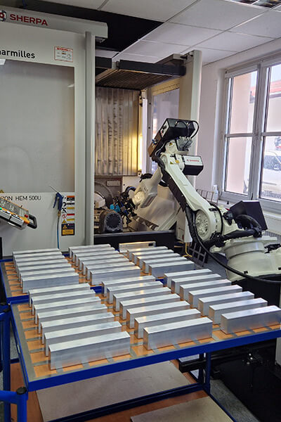
Vier Bereiche, ein Ansprechpartner
Teilefertigung auf hochmodernen Bearbeitungszentren, anschließende Oberflächenbehandlung und die fertig montierte Baugruppe inklusive Elektronik- und Pneumatikkomponenten.
In unter 24 Stunden zum Angebot
-
Schritt 01
Daten senden
Sie schicken uns die Zeichnung als PDF und die 3D-Daten. Wir lesen alle gängigen Formate ein, von STEP über SolidWorks und CATIA bis Siemens NX.
-
Schritt 02
Machbarkeit prüfen
Wir sehen uns Geometrie, Material und Toleranzen an. Wo eine konstruktive Änderung die Fertigung günstiger macht, sagen wir Ihnen das.
-
Schritt 03
Angebot erhalten
Innerhalb von 24 Stunden liegt Ihr unverbindliches Angebot vor. Ihre Daten verwenden wir ausschließlich für Machbarkeit und Kalkulation.
-
Schritt 04
Fertigung starten
Programmierung in hyperMILL, Simulation an der virtuellen Maschine, dann Zerspanung, Oberfläche und Montage aus einer Hand.
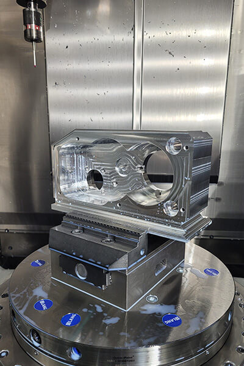
Termintreue ist selbstverständlich
Bei Schöbel CNC sind wir stolz darauf, innovative CNC-Fertigung anzubieten, die Ihren individuellen Anforderungen gerecht wird. Unser erfahrenes Team und modernste Technologien ermöglichen es uns, anspruchsvolle Projekte mit höchster Effizienz und Genauigkeit umzusetzen.
Wir legen dabei großen Wert auf Zuverlässigkeit. Termintreue ist für uns selbstverständlich, damit Sie sich auf unsere Leistungen verlassen können.
- 5-Achs-Simultanbearbeitung mit 550 × 450 × 400 mm Verfahrweg
- 3-Achs-Bearbeitung bis 1000 × 550 × 500 mm
- Automatisierte Fertigung ab 12 Stück, Serien bis 50.000 Stück
- Drehteile bis Ø 250 mm, Serien bis 10.000 Stück
Fünf Bearbeitungszentren, zwei Roboter
Mit einem fortschrittlichen Maschinenpark setzen wir auf modernste CNC-Technologie. Dies ermöglicht nicht nur höchste Präzision, sondern auch eine effiziente Umsetzung Ihrer Aufträge.
| Baujahr | 2023 |
|---|---|
| Steuerung | Heidenhain TNC 640 |
| Verfahrwege X/Y/Z | 450 / 600 / 330 mm |
| Spindeldrehzahl | 18.000 U/min |
| Werkzeugmagazin | 55 Plätze |
| Automation | Rohteilhandling bis 250 × 200 × 200 mm, max. 18 kg |
| Baujahr | 2015 |
|---|---|
| Steuerung | Heidenhain iTNC 530 |
| Verfahrwege X/Y/Z | 500 / 450 / 400 mm |
| Spindeldrehzahl | 20.000 U/min |
| Werkzeugmagazin | 60 Plätze |
| Messtechnik | Blum Laser, Messtaster zur Bauteilvermessung |
Gefertigte Kundenbauteile
Zu unseren Kunden zählen namhafte Unternehmen der verschiedensten Branchen wie der Medizintechnik, der Konsumgüterindustrie, des Anlagen- und Maschinenbaus sowie der optischen Industrie.
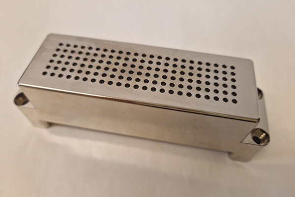
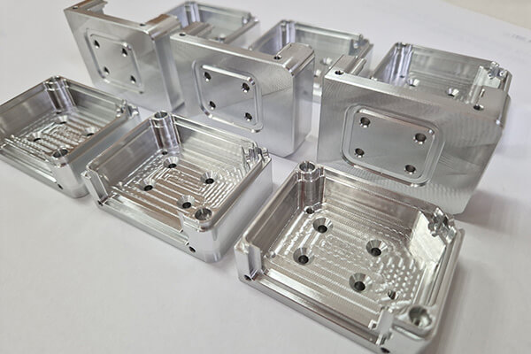
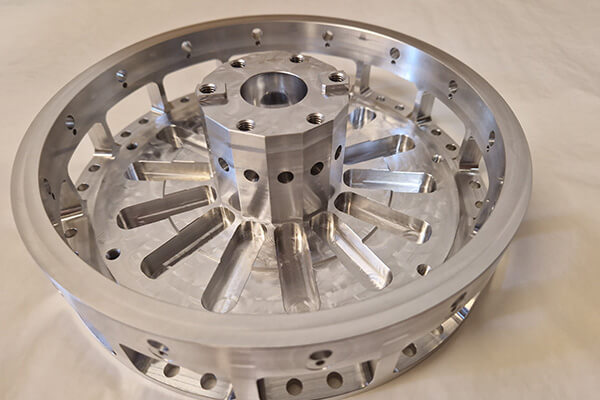
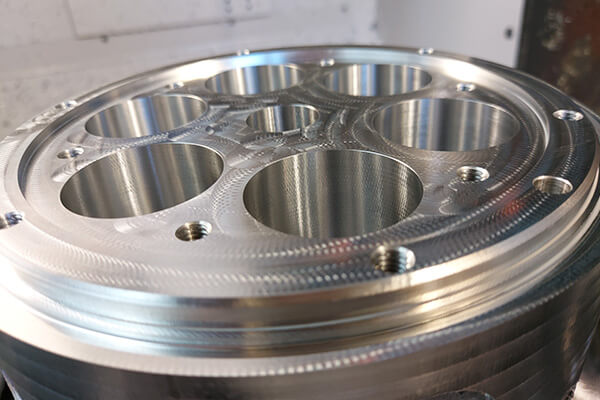
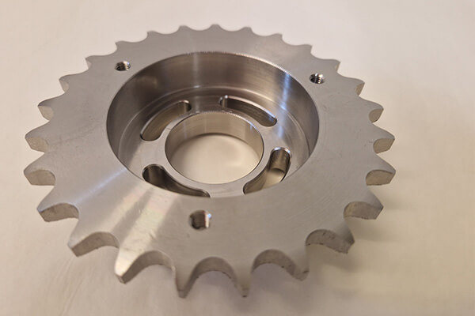
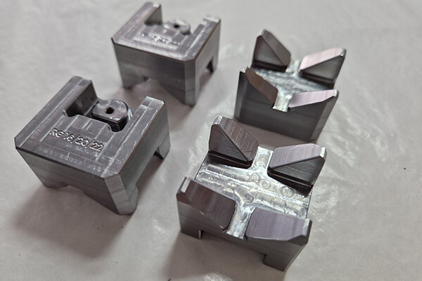
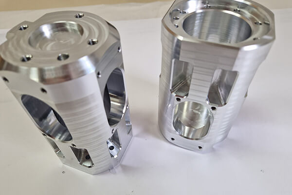
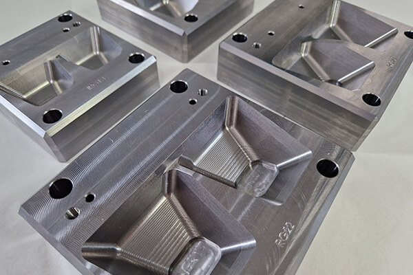
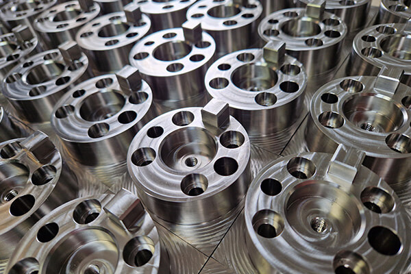
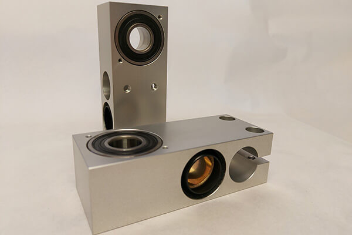
Nach ISO 9001 zertifiziert
Wir legen größten Wert auf Qualitätssicherung. Unsere Prozesse sind nach den neuesten Standards zertifiziert. Dadurch stellen wir sicher, dass jede Komponente, die unsere Fertigung verlässt, höchsten Qualitätsansprüchen genügt.
Seit mehr als zehn Jahren setzen wir auf das CAD/CAM-System hyperMILL. Die Bearbeitungen entstehen softwarebasiert und werden vorab an der virtuellen Maschine simuliert, damit sie maßhaltig, prozesssicher und effizient laufen.
- ISO 9001:2015 für spanabhebende Bearbeitung und Baugruppenmontage
- Blum Laser und Renishaw zur Werkzeugvermessung
- Messtaster zur Bauteilvermessung in jeder Maschine
- Mitutoyo CRYSTA-APEX Koordinatenmessmaschine seit 2025
- Simulation jeder Bearbeitung an der virtuellen Maschine
Erhalten Sie in unter 24 Stunden Ihr Angebot
Senden Sie uns eine Zeichnung als PDF sowie die 3D-Daten zum gewünschten Bauteil. Ihre Daten verwenden wir ausschließlich für die Prüfung der Machbarkeit und die Kalkulation Ihres Auftrags.
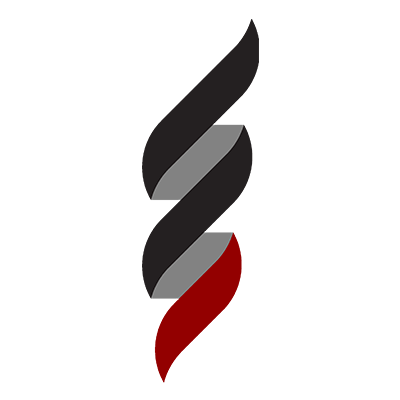